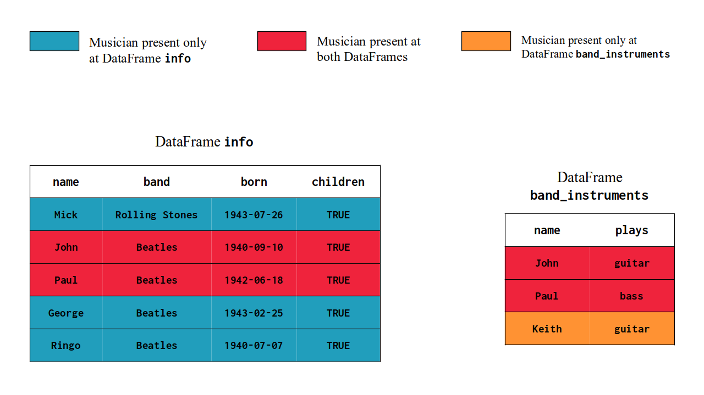
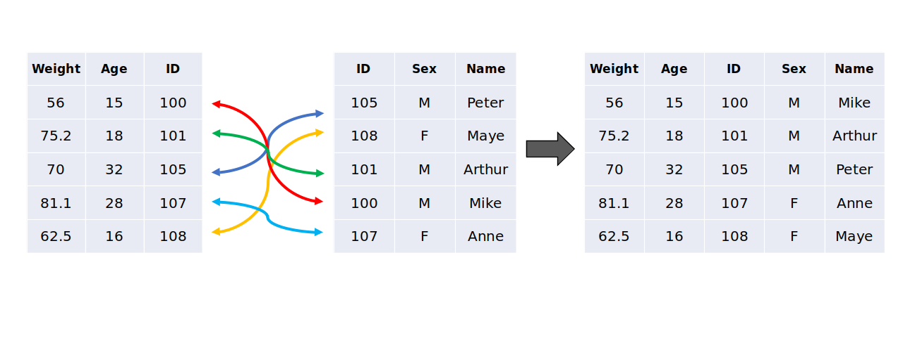
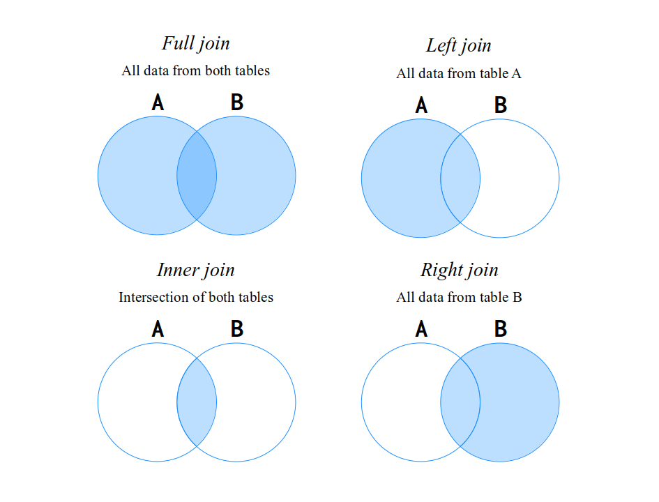

info = [
('Mick', 'Rolling Stones', '1943-07-26', True),
('John', 'Beatles', '1940-09-10', True),
('Paul', 'Beatles', '1942-06-18', True),
('George', 'Beatles', '1943-02-25', True),
('Ringo', 'Beatles', '1940-07-07', True)
]
info = spark.createDataFrame(
info,
['name', 'band', 'born', 'children']
)
band_instruments = [
('John', 'guitar'),
('Paul', 'bass'),
('Keith', 'guitar')
]
band_instruments = spark.createDataFrame(
band_instruments,
['name', 'plays']
)8 Transforming your Spark DataFrame - Part 2
8.1 Introduction
At Chapter 5 I introduced six core types of transformations over Spark DataFrames. In this chapter, I will expand your knowledge by introducing five more types of transformations available to Spark DataFrames, which are:
- Removing duplicated values;
- Merging multiple DataFrames with UNION operations;
- Merging multiple DataFrames with JOIN operations;
- Rows to columns with Pivot operations;
- Collecting and explode operations;
- Replacing and removing null values;
8.2 Removing duplicated values from your DataFrame
Removing duplicated values from DataFrames is a very commom operation in ETL pipelines. Basically, in Spark, you have two options to remove duplicated values, which are:
distinct()which removes all duplicated values considering the combination of all columns in the DataFrame;drop_duplicates()ordropDuplicates()which removes all duplicated values considering a specific combination of columns in the DataFrame;
These methods above are all DataFrames methods. Is worth mentioning that the methods drop_duplicates() and dropDuplicates() are equivalent. They both mean the same thing, and have the same arguments and perform the same operation.
Furthermore, when you run drop_duplicates() or dropDuplicates() without arguments, they use by default the combination of all columns in the DataFrame to locate the duplicated values. As consequence, over this specific situation, the methods drop_duplicates() or dropDuplicates() become equivalent to the distinct() method. Because they use the combination of all columns in the DataFrame.
8.3 Replacing and removing null values
8.4 Applying UNION operations
When you have many individual DataFrames that have the same columns, and you want to unify them into a single big DataFrame that have all the rows from these different DataFrames, you want to perform an UNION operation.
An UNION operation works on a pair of DataFrames. It returns the row-wise union of these two DataFrames. In pyspark, we perform UNION operations by using the union() DataFrame method. So the expression df1.union(df2) creates a new DataFrame which contains all the rows from both the df1 and df2 DataFrames.
8.5 Applying JOIN operations
A JOIN operation is another very commom operation that is also used to bring data from scattered sources into a single unified DataFrame. In pyspark, we can build JOIN operations by using the join() DataFrame method. This method accepts tree arguments, which are:
other: the DataFrame you want to JOIN with (i.e. the DataFrame on the right side of the JOIN);on: a column name, or a list of column names, that represents the key (or keys) of the JOIN;how: the kind of JOIN you want to perform (inner, full, left, right);
As a first example, let’s use the info and band_instruments DataFrames. With the code below, you can quickly re-create these two DataFrames in your session:
If you look closely to these two DataFrames, you will probably notice that they both describe musicians from two famous rock bands from 60’s and 70’s. The info DataFrame have more personal or general informations about the musicians, while the band_instruments DataFrame have only data about the main musical instruments that they play.
info.show()[Stage 0:> (0 + 1) / 1] +------+--------------+----------+--------+
| name| band| born|children|
+------+--------------+----------+--------+
| Mick|Rolling Stones|1943-07-26| true|
| John| Beatles|1940-09-10| true|
| Paul| Beatles|1942-06-18| true|
|George| Beatles|1943-02-25| true|
| Ringo| Beatles|1940-07-07| true|
+------+--------------+----------+--------+
band_instruments.show()+-----+------+
| name| plays|
+-----+------+
| John|guitar|
| Paul| bass|
|Keith|guitar|
+-----+------+
It might be of your interest, to have a single DataFrame that contains both the personal information and the musical instrument of each musician. In this case, you can build a JOIN operation between these DataFrames to get this result. An example of this JOIN in pyspark would be:
info.join(band_instruments, on = 'name', how = 'left')\
.show(5)+------+--------------+----------+--------+------+
| name| band| born|children| plays|
+------+--------------+----------+--------+------+
| Mick|Rolling Stones|1943-07-26| true| null|
| John| Beatles|1940-09-10| true|guitar|
| Paul| Beatles|1942-06-18| true| bass|
|George| Beatles|1943-02-25| true| null|
| Ringo| Beatles|1940-07-07| true| null|
+------+--------------+----------+--------+------+
In the example above, we are performing a left join between the two DataFrames, using the name column as the JOIN key. Now, we have a single DataFrame with all 5 columns from both DataFrames (plays, children, name, band and born).
8.5.1 What is a JOIN ?
I imagine you are already familiar with JOIN operations. However, in order to build good and precise JOIN operations, is very important to know what a JOIN operation actually is. So let’s revisit it.
A JOIN operation merges two different DataFrames together into a single unified DataFrame. It does this by using a column (or a set of columns) as keys to identify the observations of both DataFrames, and connects these observations together.
A JOIN (like UNION) is also an operation that works on a pair of DataFrames. It is very commom to refer to this pair as “the sides of the JOIN”. That is, the DataFrame on the left side of the JOIN, and the DataFrame on the right side of the JOIN. Or also, the DataFrames “A” (left side) and “B” (right side).
The main idea (or objective) of the JOIN is to bring all data from the DataFrame on the right side, into the DataFrame on the left side. In other words, a JOIN between DataFrames A and B results into a DataFrame C which contains all columns and rows from both DataFrames A and B.
In an UNION operation, both DataFrames must have the same columns, because in an UNION operation you are concatenating both DataFrames together vertically, so the number of columns (or the “width” of the tables) need to match. However, in a JOIN operation, both DataFrames only need to have at least one column in commom. Apart from that, in a JOIN, both DataFrames can have very different structure and columns from each other.
One key characteristic of JOIN operations is it’s key matching mechanism. A JOIN uses the columns you provide to build a key. This key is used to identify rows (or “observations”) in both DataFrames. In other words, these keys identifies relationships between the two DataFrames. These relations are vital to the JOIN.
If we go back to info and band_instruments DataFrames, and analyse them for a bit more, we can see that they both have a name column which contains the name of the musician being described on the current row. This name column can be used as the key of the JOIN. Because this column is available on both DataFrames, and it can be used to identify a single observation (or a single musician) present in each DataFrame.
So the JOIN key is a column (or a combination of columns) that can identify what observations are (and are not) present on both DataFrames. At Figure 8.1, we can see the observations from info and band_instruments in a visual manner. You see in the figure that both Paul and John are described in both DataFrames. At the same time, Ringo, Mick and George are present only on info, while Keith is only at band_instruments.

info and band_instruments DataFramesIn a certain way, you can see the JOIN key as a way to identify relationships between the two DataFrames. A JOIN operation use these relationships to merge your DataFrames in a precise way. A JOIN does not simply horizontally glue two DataFrames together. It uses the JOIN key to perform a matching process between the observations of the two DataFrames.
This matching process ensures that the data present DataFrame “B” is correctly transported to the DataFrame “A”. In other words, it ensures that the oranges are paired with oranges, apples with apples, bananas with bananas, you got it.
Just to describe visually what this matching process is, we have the Figure 8.2 below. In this figure, we have two DataFrames on the left and center of the image, which represents the inputs of the JOIN. We also have a third DataFrame on the right side of the image, which is the output (or the result) of the JOIN.
In this specific example, the column that represents the JOIN key is the ID column. Not only this column is present on both DataFrames, but it also represents an unique identifier to each person described in both tables. And that is precisely the job of a JOIN key. It represents a way to identify observations (or “persons”, or “objects”, etc.) on both tables.
You can see at Figure 8.2, that when the ID 100 is found on the 1st row of the left DataFrame, the JOIN initiates a lookup/matching process on the center DataFrame, looking for a row in the DataFrame that matches this ID 100. When it finds this ID 100 (on the 4th row of the center DataFrame), it captures and connects these two rows on both DataFrames, because these rows describes the same person (or observation), and because of that, they should be connected. This same matching process happens for all remaining ID values.

8.5.2 The different types of JOIN
Usually we have four types of JOIN operations, which are: full, left, right and inner. All of these types of JOIN work the same way as we described on the previous section. The difference between them is what they do in cases that an observation is found on both tables, or maybe, only on table A, or table B, etc.
In other words, all these four types will perform a matching process between the two DataFrames, and will connect observations that are found in both DataFrames. However, which rows are included in the final output is what changes between each type of JOIN.
